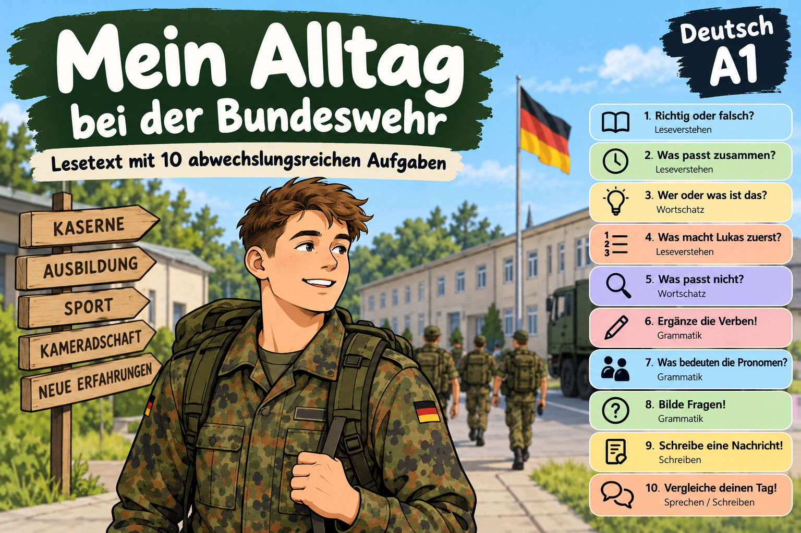

Lesetext: Mein Alltag bei der Bundeswehr
Ich heiße Lukas Richter und bin 20 Jahre alt. Ich bin seit drei Wochen bei der Bundeswehr. Ich mache gerade meine Grundausbildung. Sie dauert drei Monate. Ich bin in einer Kaserne in Deutschland. Hier wohne ich mit drei anderen Soldaten in einem Zimmer. Wir haben vier Betten, vier Schränke, einen Tisch und vier Stühle.
Mein Tag beginnt sehr früh. Um 5.30 Uhr stehe ich auf. Zuerst gehe ich ins Bad. Ich wasche mich, putze meine Zähne und ziehe meine Uniform an. Dann mache ich mein Bett. Unser Zimmer muss immer sauber und ordentlich sein.
Um 6.15 Uhr gehen wir zum Frühstück. Ich esse meistens Brot mit Käse oder Wurst. Dazu trinke ich Tee. Nach dem Frühstück haben wir oft Sport. Wir laufen, machen Liegestütze und trainieren unsere Muskeln. Manchmal ist das sehr anstrengend.
Am Vormittag haben wir auch Unterricht. Wir lernen viele Dinge: Erste Hilfe, Orientierung im Gelände und Regeln für Soldaten. Ich finde Erste Hilfe besonders interessant. Wir lernen zum Beispiel: Was muss man bei einem Unfall machen?
Um 12 Uhr gibt es Mittagessen. Wir essen zusammen in der Kantine. Das Essen ist meistens gut. Nach dem Mittagessen haben wir oft praktische Ausbildung. Wir marschieren, üben mit Karten oder lernen das Funken mit einem Funkgerät. Manchmal sind wir den ganzen Nachmittag draußen. Bei Regen und Kälte ist das nicht immer schön.
Um 18 Uhr gibt es Abendessen. Danach putzen wir unsere Schuhe und kontrollieren unsere Ausrüstung. Manchmal haben wir noch etwas Zeit. Dann telefoniere ich mit meiner Familie oder höre Musik. Mein bester Freund in der Kaserne heißt Max. Wir sprechen oft über unsere Ausbildung.
Um 22 Uhr müssen wir schlafen. Am nächsten Morgen beginnt wieder ein langer Tag.
Die Grundausbildung ist nicht leicht. Ich bin oft müde und habe manchmal Muskelkater. Aber ich lerne jeden Tag etwas Neues. Die anderen Soldaten sind nett und wir helfen uns. Ich möchte ein guter Soldat werden.
Deine Ergebnisse
Du kannst jede Aufgabe einzeln kontrollieren. Am Ende siehst du hier deine Gesamtpunktzahl für die Aufgaben 1–8.